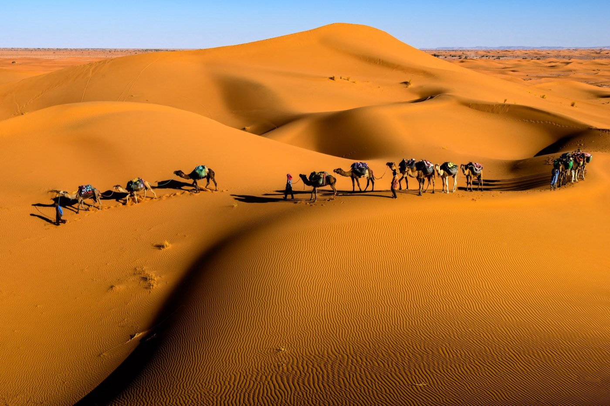

Voyage privé
Du Nord au Sud
De Tanger à Marrakech par Chefchaouen, Fès, Merzouga et la vallée du Drâa, avec une nuit sous tente.

Le rêve bleu.
Chefchaouen avec ses maisons bleues offre une atmosphère relaxante et onirique. Les rues fleuries et les boutiques d'artisanat vous invitent à la découverte. Les arômes d'épices et les plats traditionnels promettent une expérience culinaire mémorable. Les habitants accueillants partagent fièrement leur culture. Chefchaouen est un joyau caché au cœur des montagnes du Rif, où la beauté et le temps semblent figés.

De Tanger à Marrakech par Chefchaouen, Fès, Merzouga et la vallée du Drâa, avec une nuit sous tente.

Les cités impériales, Chefchaouen et l'éclipse totale du 2 août 2027 vécue depuis Tanger.

Le même voyage en véhicule privé, à votre rythme, de Marrakech à Tanger.